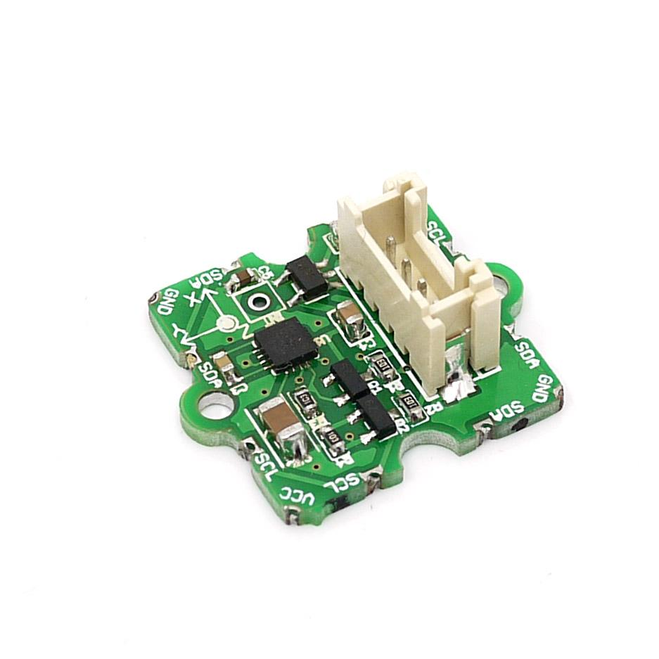
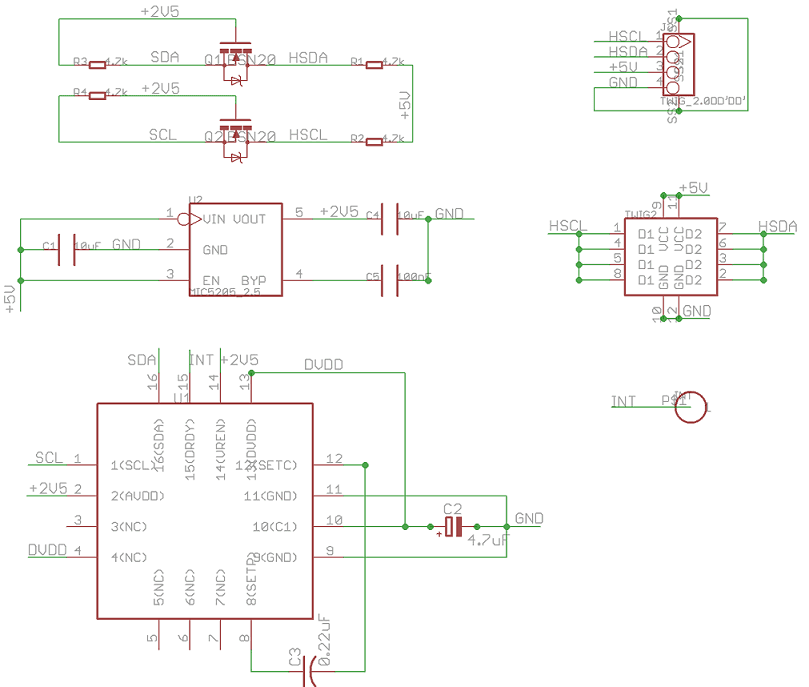
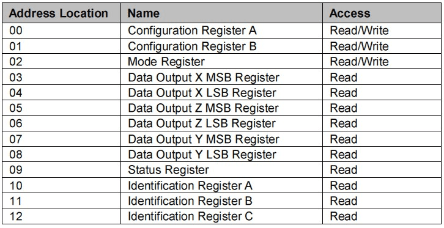
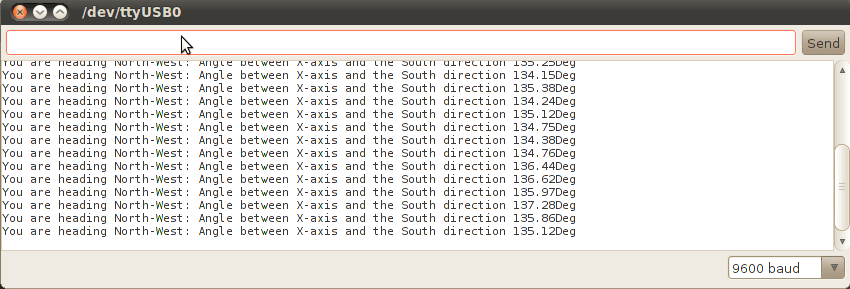
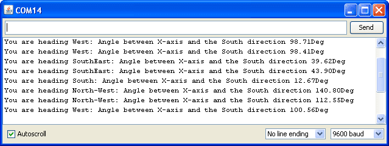

3-Axis Compass module, a member of Grove family uses I²C based Honeywell HMC5883 digital compass. This ASIC is equipped with high resolution HMC118X magneto-resistive sensors and a 12-bit ADC. It provides compass heading accuracy up to 1° to 2°. Signal conditioning like amplification, automatic degaussing strap drivers and offset cancellation are inbuilt. This Grove module also includes a MIC5205-2.5 for power supply requirement. Hence user can connect any 3.3V to 6V DC power supply.
Model:SEN12753P


| Items | Min |
| PCB Size | 2.0cm*2.0cm |
| Interface | 2.0mm pitch pin header |
| IO Structure | SCL,SDA,VCC,GND |
| ROHS | YES |
| Items | Conditions | Min | Norm | Max | Unit |
| VCC | - | 3.3 | 5.0 | 6.0 | Volts |
| Current Draw | Sleep Mode | - | 2.5 | - | μA |
| Idle Mode | - | 240 | - | μA | |
| Measurement Mode (8Hz averaged) | - | 640 | - | μA | |
| Resolution | - | - | 10 | - | milli-gauss |
| Linearity | ±2.0 gauss input range | - | 0.1 | - | ±% FS |
| Output Rate | - | - | 15 | 116 | HZ |
| Measurement Period | From receiving command to data ready | - | 8.3 | - | msec |
| Operating Temperature | Ambient | -30 | 85 | °C | milli-gauss |
| Storage Temperature | Ambient, unbiased | -40 | - | 125 | °C |
Connect the 3-Axis Compass to Seeeduino through the Grove – Basic Shield using the I²C interface. The Grove Base board provides the 5V DC (3.3V DC – 6V DC allowed).
Device Operating Modes:
HMC5883 has five modes of operation –- Continuous- Measurement Mode, Single-Measurement Mode, Idle Mode, Sleep Mode and Off Mode. These modes provide various levels of power management. Operation mode should be selected based on whether the system is continuously supplied or battery operated.
Registers:
There are 13 registers provided by HMC5883. Out of these, three registers - Configuration register A, Configuration Register B and Mode Register decides the working of the device. The remaining registers are read only Data Output register, Status Register and Identification registers.
 Table: HMC5883 Registers
For normal operation Configuration Registers A and B need not be changed. The Mode Register should be configured to an appropriate value (eg: Continuous measurement mode). Data Output registers X, Y and Z are read by accessing the address location 03 through 08.
Please refer the data sheet for complete information on the above mentioned modes and registers.
The following sketch demonstrates a simple application of reading the angle between X axis and South direction. To use / test this application, please keep the compass on a leveled surface.
Algorithm:
Demo Sketch:
Please read the comments in the below demo program. All necessary operations and logic involved with HMC5883 are explained in detail.
/* 3-Axis Compass Module (HMC5883) Demo code. 2010 Copyright (c) Seeed Technology Inc. All right reserved. Original Author: Leo Contribution: Visweswara R ( Code Redesign and Comments) This demo code is free software; you can redistribute it and/or modify it under the terms of the GNU Lesser General Public License as published by the Free Software Foundation; either version 2.1 of the License, or (at your option) any later version. This library is distributed in the hope that it will be useful, but WITHOUT ANY WARRANTY; without even the implied warranty of MERCHANTABILITY or FITNESS FOR A PARTICULAR PURPOSE. See the GNU Lesser General Public License for more details. You should have received a copy of the GNU Lesser General Public License along with this library; if not, write to the Free Software Foundation, Inc., 51 Franklin St, Fifth Floor, Boston, MA 02110-1301 USA For more details about the product please check http://www.seeedstudio.com/depot/ */ #include <Wire.h> #include <math.h> // Shift the device's documented slave address (0x3C) for write operation // 1 bit right.This compensates for how the TWI library only wants the // 7 most significant bits (with the high bit padded with 0) #define HMC5883_WriteAddress 0x1E // i.e 0x3C >> 1 #define HMC5883_ModeRegisterAddress 0x02 #define HMC5883_ContinuousModeCommand 0x00 #define HMC5883_DataOutputXMSBAddress 0x03 int regb=0x01; int regbdata=0x40; int outputData[6]; void setup() { Serial.begin(9600); Wire.begin(); //Initiate the Wire library and join the I2C bus as a master } void loop() { int i,x,y,z; double angle; Wire.beginTransmission(HMC5883_WriteAddress); Wire.send(regb); Wire.send(regbdata); Wire.endTransmission(); delay(1000); Wire.beginTransmission(HMC5883_WriteAddress); //Initiate a transmission with HMC5883 (Write address). Wire.send(HMC5883_ModeRegisterAddress); //Place the Mode Register Address in send-buffer. Wire.send(HMC5883_ContinuousModeCommand); //Place the command for Continuous operation Mode in send-buffer. Wire.endTransmission(); //Send the send-buffer to HMC5883 and end the I2C transmission. delay(100); Wire.beginTransmission(HMC5883_WriteAddress); //Initiate a transmission with HMC5883 (Write address). Wire.requestFrom(HMC5883_WriteAddress,6); //Request 6 bytes of data from the address specified. delay(500); //Read the value of magnetic components X,Y and Z if(6 <= Wire.available()) // If the number of bytes available for reading be <=6. { for(i=0;i<6;i++) { outputData[i]=Wire.receive(); //Store the data in outputData buffer } } x=outputData[0] << 8 | outputData[1]; //Combine MSB and LSB of X Data output register z=outputData[2] << 8 | outputData[3]; //Combine MSB and LSB of Z Data output register y=outputData[4] << 8 | outputData[5]; //Combine MSB and LSB of Y Data output register angle= atan2((double)y,(double)x) * (180 / 3.14159265) + 180; // angle in degrees /* Refer the following application note for heading calculation. http://www.ssec.honeywell.com/magnetic/datasheets/lowcost.pdf ---------------------------------------------------------------------------------------- atan2(y, x) is the angle in radians between the positive x-axis of a plane and the point given by the coordinates (x, y) on it. ---------------------------------------------------------------------------------------- This sketch does not utilize the magnetic component Z as tilt compensation can not be done without an Accelerometer ----------------->y | | | | | | \/ x N NW | NE | W----------E | SW | SE S */ //Print the approximate direction Serial.print("You are heading "); if((angle < 22.5) || (angle > 337.5 )) Serial.print("South"); if((angle > 22.5) && (angle < 67.5 )) Serial.print("South-West"); if((angle > 67.5) && (angle < 112.5 )) Serial.print("West"); if((angle > 112.5) && (angle < 157.5 )) Serial.print("North-West"); if((angle > 157.5) && (angle < 202.5 )) Serial.print("North"); if((angle > 202.5) && (angle < 247.5 )) Serial.print("NorthEast"); if((angle > 247.5) && (angle < 292.5 )) Serial.print("East"); if((angle > 292.5) && (angle < 337.5 )) Serial.print("SouthEast"); Serial.print(": Angle between X-axis and the South direction "); if((0 < angle) && (angle < 180) ) { angle=angle; } else { angle=360-angle; } Serial.print(angle,2); Serial.println(" Deg"); delay(100); }


Fig: Serial Monitor Outputs
Please list your questions here:
If you have questions or other better design ideas, you can go to our forum or wish to discuss.
| Revision | Descriptions | Release Date |
| 2-axis compass Module v0.9b | Initial public release | Jun 08, 2009 |
| Grove - 3-axis Compass v0.9b | Revision to Grove series(NPI) | Dec 7, 2010 |
| Grove - 3-axis Compass v0.9b | Revision to Grove series(REV) | May 20, 2011 |
Bug Tracker is the place you can publish any bugs you think you might have found during use. Please write down what you have to say, your answers will help us improve our products.
The Additional Idea is the place to write your project ideas about this product, or other usages you've found. Or you can write them on Projects page.
The resources need to be downloaded, like Eagle file, Demo code, project or other datasheet.
Click here to buy: http://www.seeedstudio.com/depot/grove-3axis-compass-p-759.html?cPath=144_145.
You can buy the old version 2-axis compass Module at: http://www.seeedstudio.com/depot/2axis-compass-module-p-235.html?cPath=84_89&zenid=7ea361aeff3addc10919614da3399d85
This documentation is licensed under the Creative Commons Attribution-ShareAlike License 3.0 Source code and libraries are licensed under GPL/LGPL, see source code files for details.
Links to external webpages which provide more application ideas, documents/datasheet or software libraries
Copyright (c) 2008-2016 Seeed Development Limited (www.seeedstudio.com / www.seeed.cc)